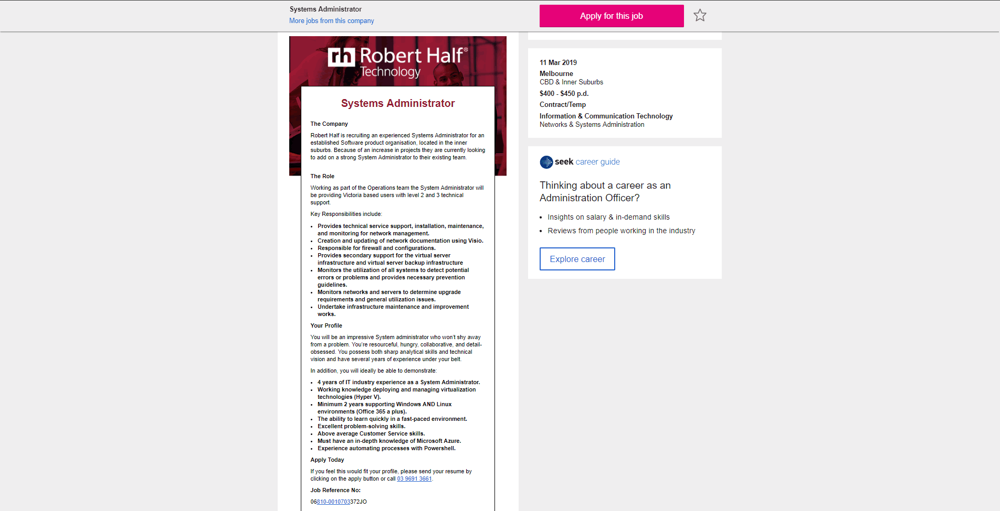
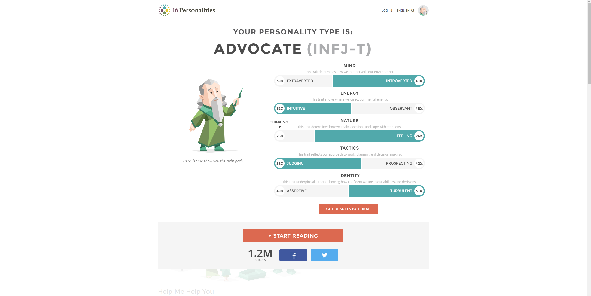

My name is Rahal Abeyrathna and I am 18, turning 19 this May.
My student code is s3781696 and email is s3781696@student.rmit.edu.au
My nationality is Sri Lankan however I was born in Australia on May 10th 2000 and I am actually really bad at speaking Sinhalese.
Prior to RMIT, I went to Glen Waverley Secondary College and studied Futher Maths, English Language, Psychology,
Software Development and Media.
I also did a traineeship for a company called Lightmare Studios which counted as my 6th subject while also getting paid!
As for my interesting fact, I recently got a pet bird, her name is Luma (no, not Luna) and she is a Green Cheek Conure. She is such a sweetheart but also
the biggest brat as she constantly needs your attention.
In my spare time, I enjoy watching youtube videos, listening to music and also the occasional nap. I also like playing games but I don't find myself having
as much time to play lately.
What is your interest in IT? When did your interest in IT start? Was there a particular event or person that sparked your interest? Outline your IT experience (if any).
Why did you choose to come to RMIT?
What do you expect to learn during your studies?

Short Description-
This job advertisement is for a position as a System Administrator which is what I am particularly interested in becoming after completing Uni. I am really interested in being part of the team that manages the system and networks
Necessary Skils and Experience-
In order to get this position, I require 4 years of IT experience previously as a SysAdmin so I would need to look for a junior position or work my way up in another company before I would be able to apply for this position.
I believe I already have the ability to learn in a fast-paced environment and that this is something that I could adapt to very easily.
I've also worked in retail and fast food so I believe that my customer service skills will be more than adequete to deal with the expectations of this job.
I'm also slowly working on my CompTIA A+ 901 and 902 certification which will help me get the basic IT knowledege which could help me stand out a little when applying for this job.
Gaining these skills-
In order to obtain these skills, I will work on my certifications while completing my degree which will aid in my overall IT knowledge. Specfically, I plan on getting my CCNA, Security + and Linux + certifications.
I also plan to mess around with Powershell in my spare time and to learn commands and how it works overall when I get a chance. I've already learnt the basic of the linux terminal which I hope will help with learning
Powershell. I also plan on getting a Level 1 Helpdesk position sometime while in Uni or after graduating which will teach me the basics that I would need to know and I can slowly work my way up from there and learn more
important and necessary skills which will help me get a job such as the one listed above.
I will probably try looking into Microsoft Azure if I get a chance and try messing around with how it works and learn the basics of it. I will also mess around with virtualization a bit more as it will probably be a crucial
that I will need moving foward.
Results of Myers-Briggs Test-
Results of Learning Style Test-

Results of Big Five Personality Test -

What do the results of these tests mean for you?
The results of these tests do seem to be somewhat accurate as they all described me accurately to be more introverted than extroverted and I seem to get simillar results on my way of thinking and my personality overall.How do you think these results may influence your behaviour in a team?
These results show that I am optimisistic and agreeable which I believe are important aspects to working in a team as it is important to be able to listen to other peoples opinion and to co-operate with everyone to get
the job done. However ther results also show that I am introverted which makes it harder to communicate with others however I believe this aspect is a little off as while I am introverted, I find it easy to communicate
with others if they are willing to talk to me and after getting to know them a little better.
How should you take this into account when forming a team?
When forming a team, I want to find people who are more extroverted than I am as they would be more likely to talk to me and I would feel more comfortable opening up to them and talking more if I know that they are happy to
talk with me. I also want to find people who can think in different ways than I can as that would open up many more possibilites on how we could work and overcome any challenges and obstacles that we may face when working
on our project. Having different persepectives and working styles is crucial in my opinion as having a diverse range of perspectives allows for more creative thinking and would result in a better project in the end.
I would also like to be in a group with people who can be open thinkers and imaginative as I personally don't think that I can be very creative on my own and having people who can be open thinkers in a team would be
very beneficial.
Overview-
I would want to create my own side-scrolling style game using Unity or some other desktop game-creator style programs. The game would be a desktop game that would be somewhat similar to a Mario game but on the desktop environment. If
possible, it should be able to run on all times of operating systems and potentially also on
the mobile platform. It would also be great if it could become an online style game which would be easier to access compared to
having to download and run the game locally.
Motivation-
I used to work for Lightmare Studios as a trainee and had a little play around with some games that they were developing which made me interested in trying to make a game myself. I never had a chance to try it out myself though and I
believe that this is an optimal opportunity to try and make a game similar to those that I got a chance to play-test. I believe if I can make a simple but fun small desktop game, it would be quite popular as a quick timewaster
where people want to play a game just as a quick distraction which was one of the aspects I really enjoyed when play-testing Lightmare Studios’ games.
Description-
The game would be a small arcade like style game where a level or round would only last for a couple minutes and is a great distraction type game where the player only plays for short bursts. It would be similar to games such as
Downwell or Super Hexagon where it can be played at length but the game itself is very simple and need only last for a couple minutes. Downwell is a good example as it is a vertically scrolling game which has the player constantly
following deeper into the well while killing enemies and collecting gems and powerups. I would want my game to be just as simple as this but also equally engaging. These types of games are also great choices to be moved to the
mobile platform where people only play games casually and don’t need a thrilling story telling game. I want my game to feature a power/ability system where the user can play through the level and pick up various powers which can
change the way they interact with the level and give them the creative freedom to complete the level in any way they’d like. The user could have a triple jump ability which would help make completing the level a breeze however if
they use all 3 jumps in a given time, they will stumble back onto the ground, rendering them immobile and vulnerable to the enemies on the level. Another power could be the ability to stick to walls making platforming very easy
but this would not give a great offensive boost and the player would need to maneuver around the enemies rather than fighting them. These abilities can give the player the choice to complete the level in whichever way they prefer
such as to either complete the level as fast as they can, to maneuver their way in a creative manner or to take a run and gun style of approach where they defeat every enemy in sight.
The game would utilize the conventional WASD play style on PC systems and if it was to be ported to mobile, it would have touchscreen controls where touch the left or right would move the character in said direction. It could also
have a visual button showing the left, right and jump buttons. The game should be relatively easy to pick up and play and should not be too complicated for first-timer players to learn. The game itself should be very straightforward
and the player should be able to understand the goal of the game and the controls to play relatively quickly. Learning the abilities themselves may take the player a little longer to learn but by learning each ability and how to
utilize them, the player should feel a sense of accomplishment and should be rewarded with the creative freedom to use that ability to unique and creative ways. Again, using Downwell as an example, there are many different types of
abilities and weapons which can be used interchangeable to allow for a unique and creative way to play and enjoy the game. For example, the game has the shotgun weapon which works well with the jetpack ability as it allows the user to
have explosive firepower and a way to slowly maneuver down the well once they run out of ammo. I hope to be able to recreate something similar to this where the players can think of unique and
creative combinations that I do not even originally intend to be used together.
Tools and Technologies-
To create this game, I would need a desktop with the suitable specs to be able to run and create the game. I would also need test devices on which devices I would like the game to run on such as different types of phones and laptops
(Macs, iPhones, Android Devices, Tablets). We would also need software such as Unity or Construct2 in order to make the game itself, Photoshop and gimp to create the visual files and graphics of the game and programs like
Adobe Audition to create the sound tracks and sound effects that the game would use.
Skills Required-
In order to create the game, I would need to find people who have experience in coding and creating a game as this would be my first time doing it and I would not be able to code it myself. I would also need to find people who are
good at creating art for the visuals of the game and I would also need to find people who are able to create music and sound effects for the game. The hardware itself shouldn’t be too hard to find as I have many friends who own
various devices and I have quite a few of them on hand already. Finding the skills to make this project a reality may be a little difficult as I would need to specifically find people who are skilled in design, coding and music
but through networking, it is definitely possible.
Outcome-
If the project is successful, the result should be a polished game that players of the target audience can enjoy to play in the spare time. It should be available on a range of devices and should be a unique game that keeps the player
coming back for more without getting repetitive or boring. It could also inspire others to create games like I was inspired to make this game. My main goal of the development of the game is to create a unique and fun distraction
game that the player can keep coming back to without getting bored of it’s simple play style and mechanics.